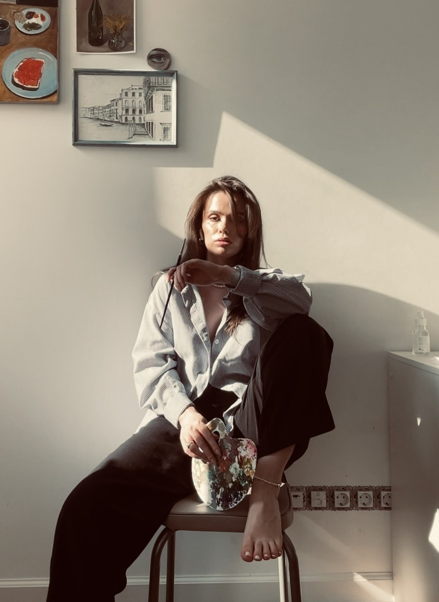

Zubkova Mariia
прокрутите вниз ↓

Я Маша, художница родом из г. Пензы, живущая в
Санкт-Петербурге.
Обучалась в ИЗО – студии при гимназии №42 г. Пензы, закончила Пензенский колледж архитектуры и строительства по специальности архитектура, учусь в школе дизайна Bang Bang Education на графический дизайн
В своей практике я все чаще использую масляную пастель. Она полюбилась мне за текстуру, яркость и возможность работать пальцами, так рисунок остается живым и воздушным.
В моих работах вы увидите красоту привычных вещей, их цвет и свет. Эти сюжеты тесно связаны с моим детством, со временем, проведённым с семьёй, с ощущением понятного и спокойного мира. Природа в моих работах — символ вечности и опоры: она была до нас, есть и будет после.